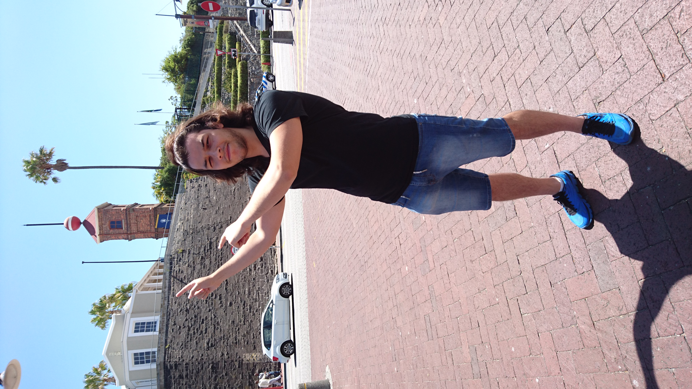

Sandro
Viljoen

Which City?

I would like to visit Tokyo city because the Japanese culture interests me. I also enjoy Asian cuisine and am fond of street markets, of which there is no shortage in Tokyo city. A notable mention are the pink sakura trees, which blanket many areas of the city as if marking their territory - making it clear to onlookers, that they are indeed, in Japan.
A Foreign Language
I would like to learn Japanese because it is a nice language to hear others speaking. I have always enjoyed listening to Japanese people speaking their language.
| ENGLISH | JAPANESE |
|---|---|
| "Are you alright?" | "Daijoubu desu ka?" |
| "I like you!" | "Daisuke!" |
| "Good evening." | "Konban-wa." |
| "Goodbye." | "Sayonara." |
| "Thank you!" | "Arigatou!" |
Historical Places in the V&A Waterfront
The Clock Tower

- The Clock Tower boasts an old tidal-gauge mechanism on the bottom floor, which was used to check tide levels.
- The clock mechanism is found on the top floor.
- Thanks to the restoration of this national monument in 1997, the original clock is still in use today.
The Swing Bridge

- Designed and constructed in 1997.
- The bridge retracts when boats want to pass from the harbour to the ocean. Pedestrians are unable to cross the bridge at this time.
- The unspoken rule of crossing the bridge is: "Keep your the left!"
Time Ball Tower

- Built in 1894 and used for 40 years.
- Was used as a repeater station for harbour signals.
- The Cape Town ball is made of fibre glass.